北大荒农机博览园
在友谊镇西侧，从钢拱长廊走到月亮湾畔的露天展区，可以近看轮式拖拉机、联合收割机和其他农机。园区也讲述梁军和友谊农场五分场二队的故事。

从苏联援建到农机国产化
1954年：从畜力耕作到成套农机
当时许多地方还靠畜力和手工农具耕作。1954年12月7日，国务院常务会议通过建立国营友谊农场的决定。苏联为规划约2万公顷的国营谷物农场赠送机器设备2279台（件），并派专家担任顾问。这些设备在建场后近20年的生产中发挥了主要作用。
1960年代：国产拖拉机进入农场
1960年，农场配备36台国产东方红–54履带式拖拉机，1970年又配备14台东方红–75。田间机械化作业比例，从1960年的40%提高到1966年的83%。机械化生产逐步从主要依赖引进设备转向使用国产农机。
机手把经验带出农场
全国劳模郝焕文带领机车组摸索农机的使用、检查、维护和管理办法，并在垦区推广。在友谊农场，刘瑛使用牵引式联合收割机，一个班次收割小麦25.3公顷，她所在的车组获团中央授予“保尔·柯察金突击队”称号。建场后的近20年里，农场向外输送科技人员和熟练工人3000多名，呼应建场时“出经验、出粮食、出人才”的任务。
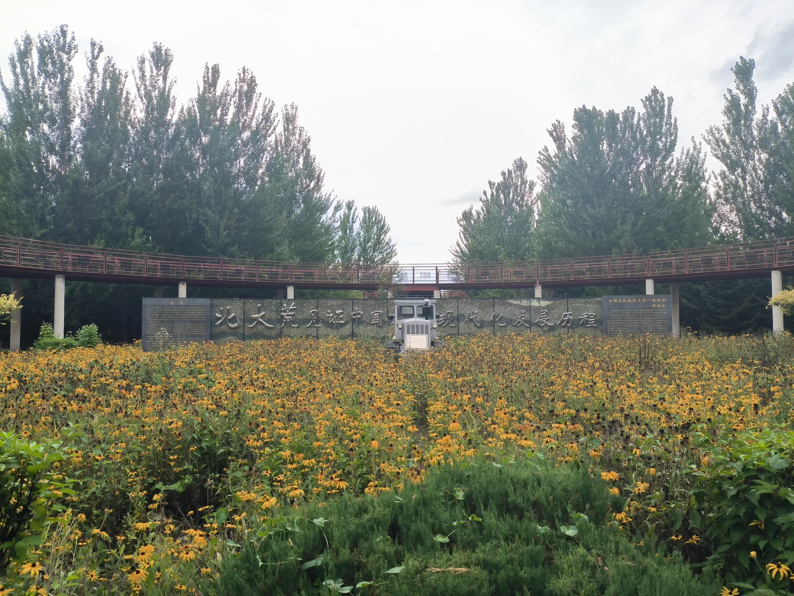
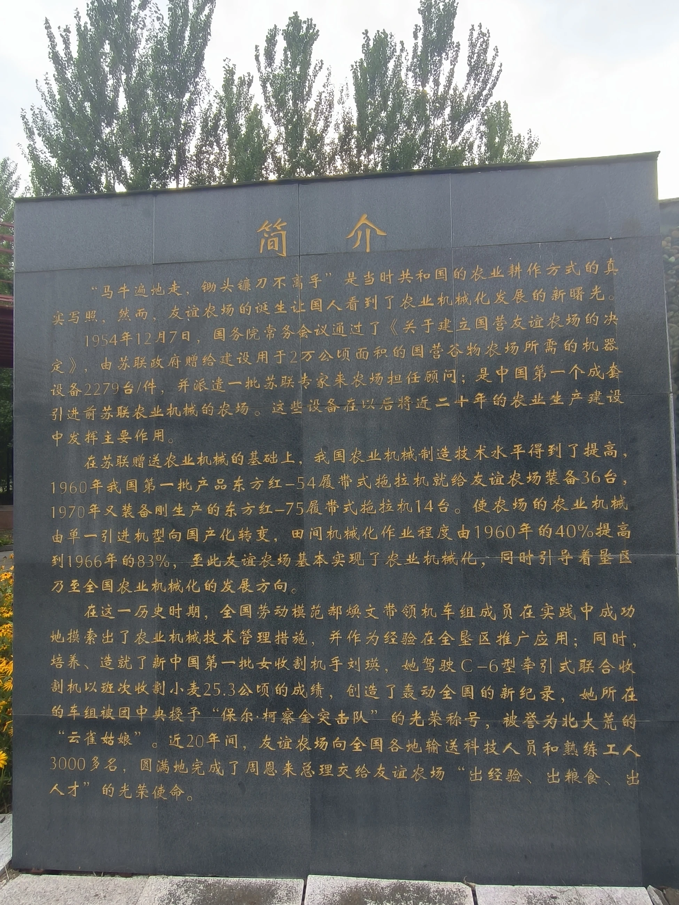
从钢拱长廊走到农机展区
入口的立柱写着“北大荒农机博览园”。沿钢拱长廊向里，远处的高台托着一台绿色联合收割机。园内以月亮湾串联科普园、现代园和风情园，露天机具可从侧面看清结构。室内农机博览中心还有农机展品。
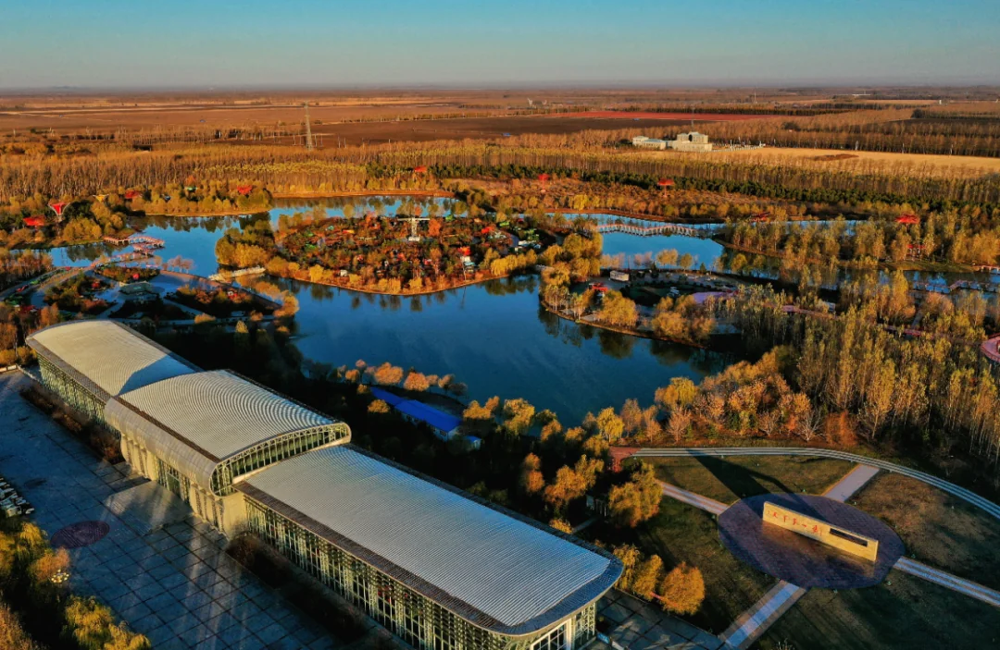
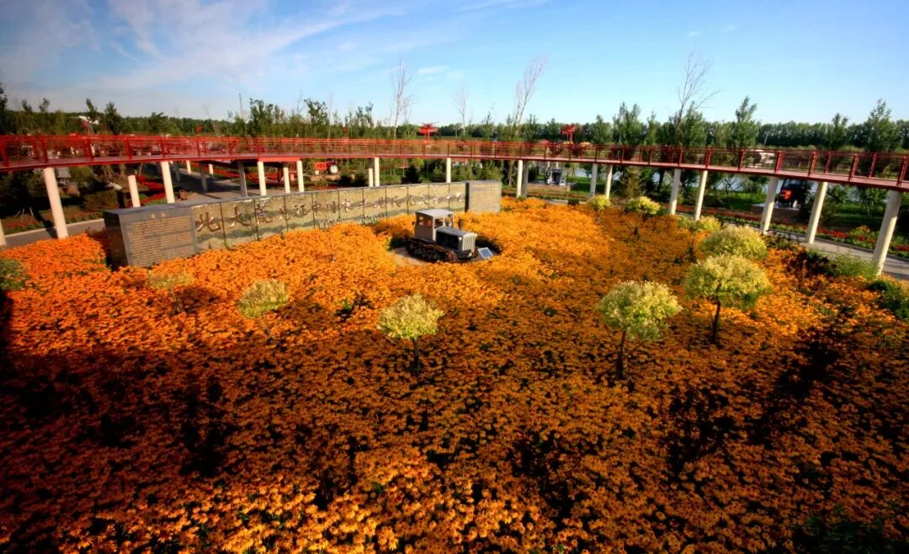
看懂露天陈列的老农机
拖拉机为配套农具提供牵引和动力。联合收割机则把切割、输送、脱粒和卸粮接在同一次作业里。同一排展品里，有带宽割台的自行式联合收割机，也有借助拖拉机动力的悬挂式机具。
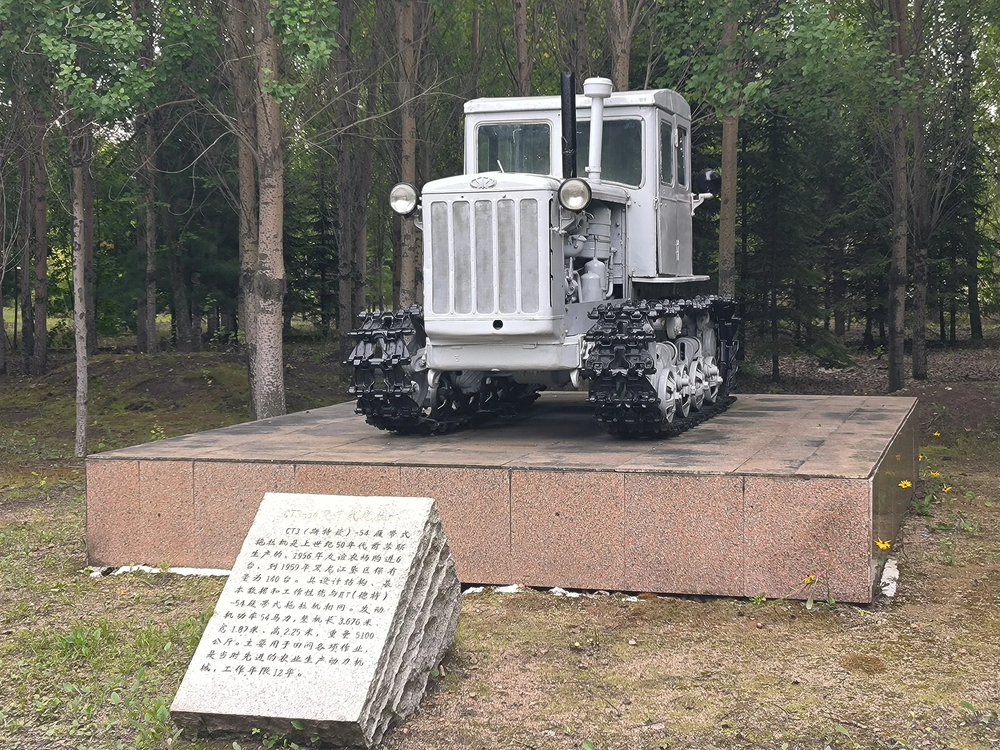
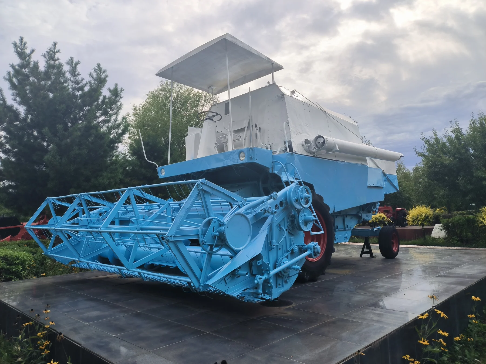
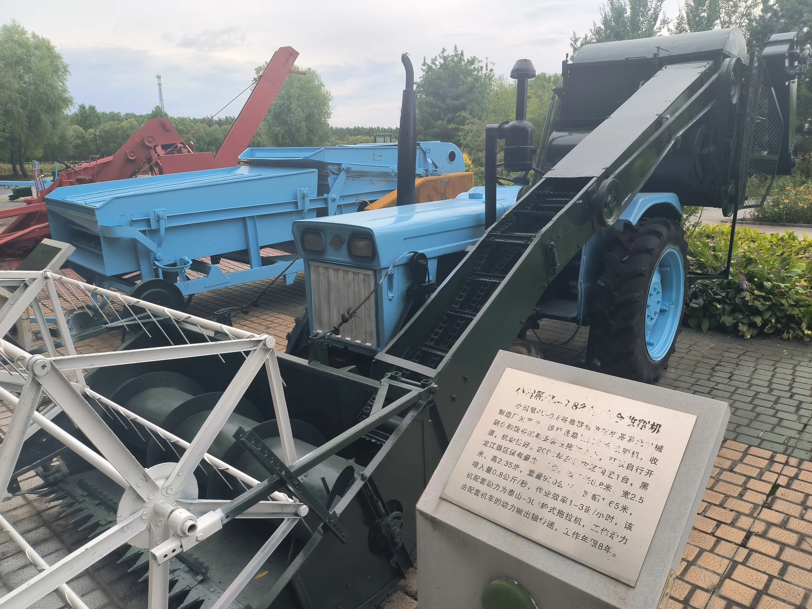
再看 5 张农机照片
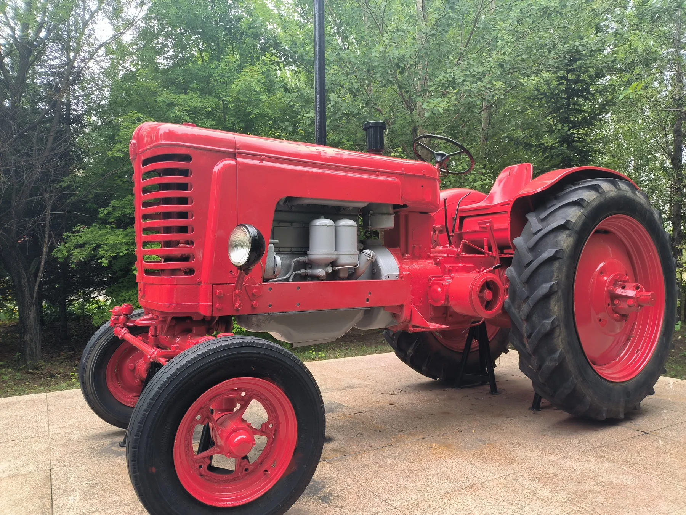
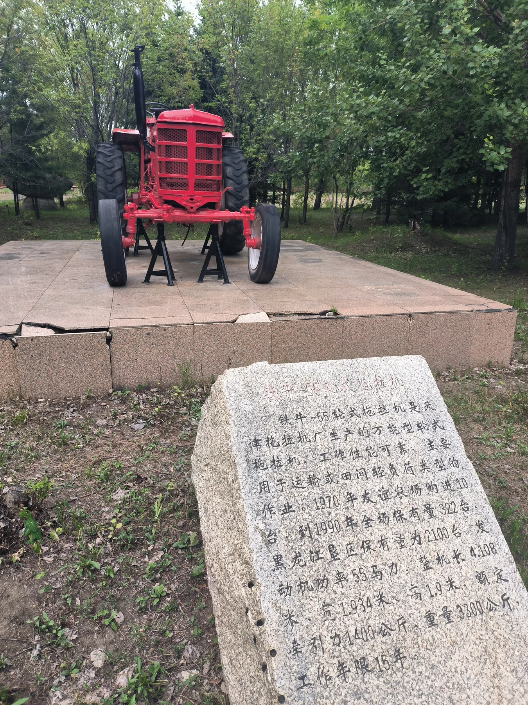
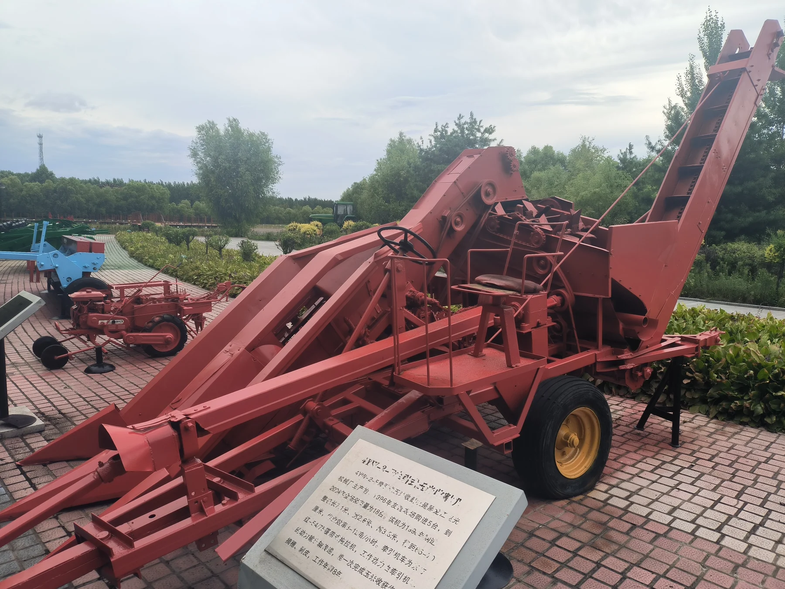
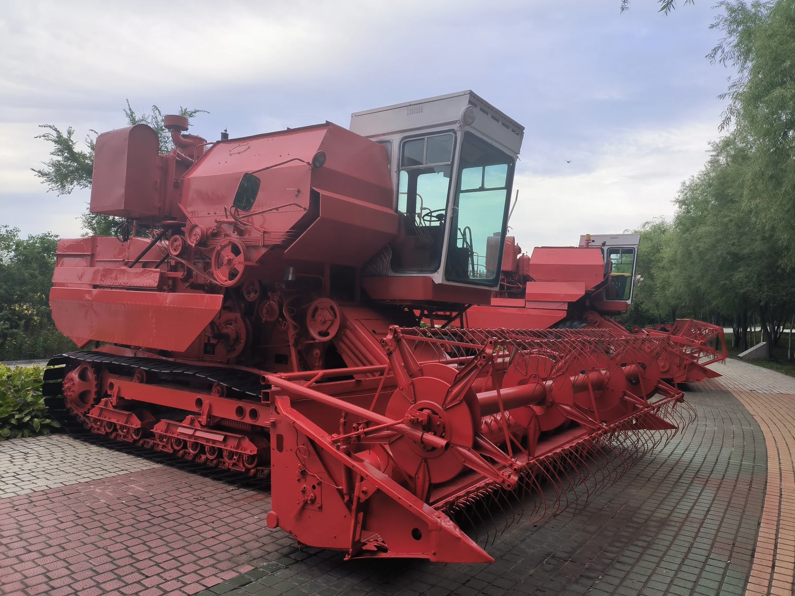
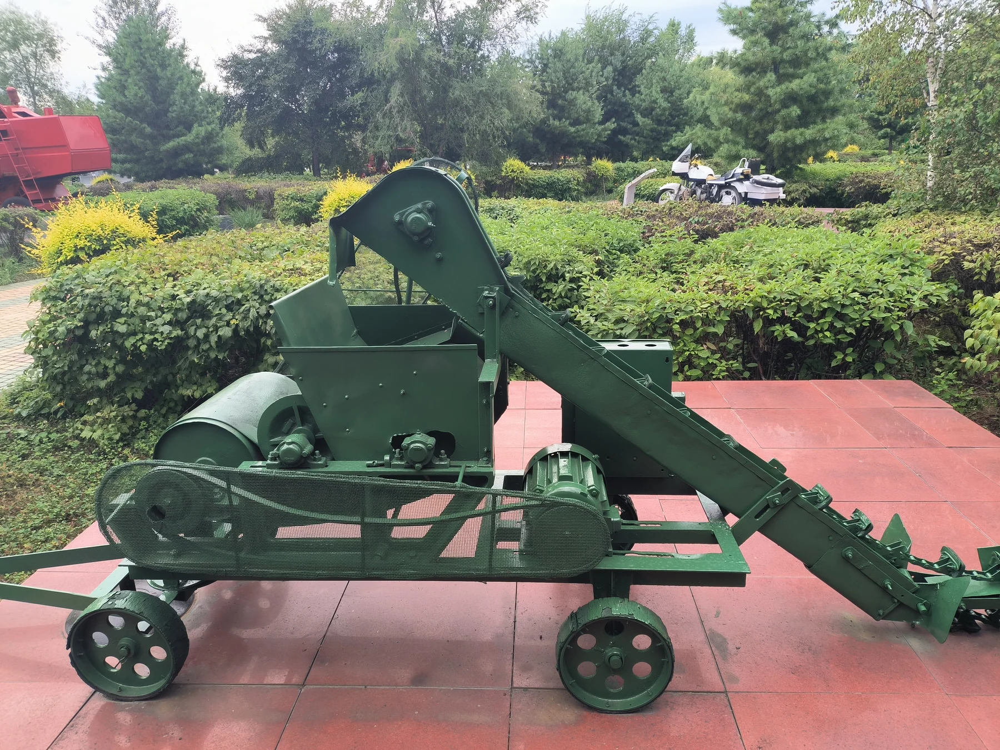
驾驶席上的梁军与刘瑛
园区用纪念碑和壹元券主题布景讲梁军。友谊博物馆用老照片讲刘瑛如何在当地开荒、收麦，并与童延兰交流驾驶技术。

五分场二队，从成套农机到精准农业
1978年的试点首先解决成套机械怎样在连片地块上协同作业。2001年，农业部批准在这里开展精准农业试点，项目投资1200万元。试点配备带卫星定位和产量监测的凯斯2366联合收割机、变量施肥播种机与配套种肥车，以及地面GPS差分纠偏设备。
收割机把收获量和田间位置对应起来，能记录一块地里哪些位置产量较高或较低。变量设备可根据田块位置和预设方案调节施肥量。农场在2004至2005年继续引进迪尔和凯斯拖拉机、联合整地机等设备，2010年起进一步引进40套拖拉机自动导航驾驶操作系统及2个地面网络纠偏基站。
- 1954
国营友谊农场建场
在当时集贤县三道岗一带选址，苏联提供成套农机并派来专家。从接收设备、训练机手到维修和储粮，一套机械化生产体系开始建立。
- 1978
五分场二队试验成套机械化
引进美国农机和耕作技术，让耕整、播种、田间管理和收获按同一套生产组织衔接。
- 2001
五分场二队试点精准农业
项目由农业部批准立项，投资1200万元，试用卫星定位、产量监测和变量施肥播种设备。农机开始记录田块内的差异，也能按位置调整投入。
- 2010年起
扩大自动导航应用
农场引进拖拉机自动导航驾驶操作系统40套，设置地面网络纠偏基站2个，并继续更新拖拉机和联合收割机。